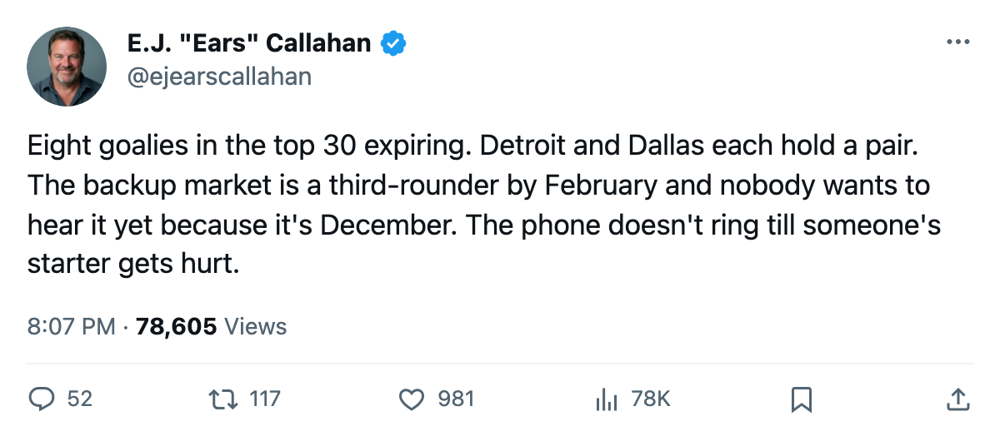
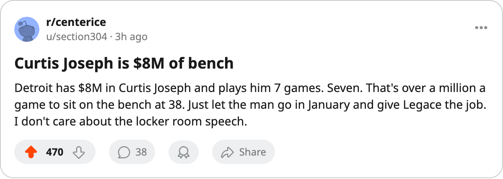

NSH
NSH CAR
CAR TOR
TORGoaltender Glut: 8 of the 30 Best Expiring Names Wear a Mask. Detroit Holds Two, Dallas Holds Two.
The trade deadline is 105 days away. Eight of the top 30 contract-year players are goaltenders, and two clubs are holding pairs.
 E.J. "Ears" CallahanInsider · The Hot Stove
E.J. "Ears" CallahanInsider · The Hot Stove

The goaltender rental market is flooded

Eight of the 30 highest-graded players on an expiring contract are goaltenders. That's a quarter of the top of the contract-year class, and two clubs carry a pair each. The trade deadline, what the calendar has as the trade deadline, is 105 days away. The supply is sitting in net.
 Curtis Joseph84 is 38. He has played 7 games for
Curtis Joseph84 is 38. He has played 7 games for  Detroit Red Wings this season on $8.00M. His Book grade is 91. His morale is 96. He is comfortable, paid like a franchise man, and watching
Detroit Red Wings this season on $8.00M. His Book grade is 91. His morale is 96. He is comfortable, paid like a franchise man, and watching  Manny Legace84 play 17 games for $1.20M at the same 91 grade.
Manny Legace84 play 17 games for $1.20M at the same 91 grade.
Detroit holds the league's cheapest pair. Joseph and Legace are both expiring, both graded 91, and the salary gap between them is enormous. The Red Wings have 29 points, sit 3rd in the Central, and own 3 draft picks across 5 rounds, tied for fewest in the league. They cannot trade either man for a pile of draft capital because they have none to start with.
A man who would know told me Detroit has no urgency. They like Legace, they respect Joseph's dressing-room voice, and they have 105 days to let Legace prove he can carry 20 games. If Legace holds the 91 with 25-plus starts, the $8.00M problem solves itself: Joseph walks in July, Detroit saves the salary, and nobody files a trade.
If Legace wobbles? That's a different article in February.
 Dallas Stars carries the same structure at half the price. Jason Bacashihua89, 23, 91 grade, $0.90M, 5 games played.
Dallas Stars carries the same structure at half the price. Jason Bacashihua89, 23, 91 grade, $0.90M, 5 games played.  Ron Tugnutt84, 38, 86 grade, $2.50M, 1 game played. Dallas has 36 points and the league's best per-point at $1.61M. They are not selling. They are simply sitting on a pair and waiting to see which kid plays more.
Ron Tugnutt84, 38, 86 grade, $2.50M, 1 game played. Dallas has 36 points and the league's best per-point at $1.61M. They are not selling. They are simply sitting on a pair and waiting to see which kid plays more.
The other four round out the glut.  Tomas Vokoun91 at 91 and $0.90M in Nashville.
Tomas Vokoun91 at 91 and $0.90M in Nashville.  Kevin Weekes84 at 86 and $6.23M in Carolina.
Kevin Weekes84 at 86 and $6.23M in Carolina.  Mike Dunham88 at 83, $3.10M, and 82 morale, one of the 15 unhappiest men in hockey, sitting in New York.
Mike Dunham88 at 83, $3.10M, and 82 morale, one of the 15 unhappiest men in hockey, sitting in New York.  Roberto Luongo95 at 95 and $1.60M in Toronto, where he will not be moved.
Roberto Luongo95 at 95 and $1.60M in Toronto, where he will not be moved.
| Player | Club | Grade | Salary | Games | Age | Morale |
|---|---|---|---|---|---|---|
| Curtis Joseph | DET | 91 | $8.00M | 7 | 38 | 96 |
| Manny Legace | DET | 91 | $1.20M | 17 | 32 | 86 |
| Tomas Vokoun | NSH | 91 | $0.90M | 17 | 29 | 97 |
| Jason Bacashihua | DAL | 91 | $0.90M | 5 | 23 | 94 |
| Kevin Weekes | CAR | 86 | $6.23M | 18 | 30 | 95 |
| Ron Tugnutt | DAL | 86 | $2.50M | 1 | 38 | 97 |
| Mike Dunham | NYR | 83 | $3.10M | 21 | 33 | 82 |
| Roberto Luongo | TOR | 95 | $1.60M | 9 | 26 | 84 |
Here is what the room reads: three 91-grade goalies on $1.20M or less are going somewhere before March unless their clubs re-sign them. Vokoun's situation is the same one I flagged in late November, Nashville has 5 picks and 2 firsts and needs to decide whether $0.90M for a 91 is a gift worth keeping or rent money worth collecting. Bacashihua is 23 with a 91 grade and 5 games of proof. If he plays 15 more and holds the number, Dallas has a keeper and a 38-year-old to offload. Tugnutt will not play another game in Dallas.
The price of a rental backup, league sources say, is a third-rounder. The price of a starter-grade backup is a second. With 8 names on the board and roughly 10 clubs who need a backup by March, the market clears in January and February. Nobody should expect a March auction.
Dunham is the one to watch. He is unhappy, expiring, and his club is first in the Atlantic at 40 points with a $92.95M payroll. The only confirmed trade this window sent salary from a non-playoff club to a playoff club. If  New York Rangers want a third round for a 33-year-old backup with a 83 grade, they will take it. If they don't trade, they re-sign someone else in July and Dunham walks into the pool.
New York Rangers want a third round for a 33-year-old backup with a 83 grade, they will take it. If they don't trade, they re-sign someone else in July and Dunham walks into the pool.
A man who would know says the phone isn't ringing yet for most of them. It's December. The market wakes up in February.

